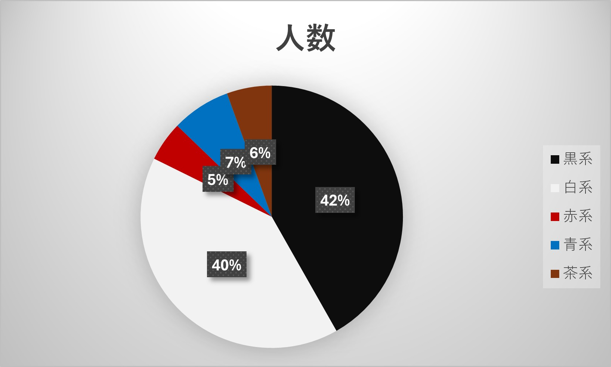

定点観察
テーマ：人々の靴
観察の焦点：靴の色（赤系、青系、茶色系、白系、黒系）
観察場所：マークイズみなとみらいの出入り口
観察時間：13時55分から14時15分の20分間
天気：曇り
結果
黒系：196人
白系：190人
赤系：23人
青系：34人
茶系：26人
合計集計人数：469人
グラフにするとこんな感じ、、

さすがに白黒の靴の人が多い！！
考察まとめ
白と黒の靴を履いている人がともに全体の４割を占めている。他の赤青茶系の数に大きな差はない。
しかし老若男女、幅広い世代の方がいたため、明るい色味の靴は子供の数といっても過言ではないように感じた。
また、1人1色の集計を担当し目視で履いている人の年代なども観察していた。印象として、赤系の原色の赤は男児
に多く見られ、ピンクは女児によく見られた。淡いピンクなどは女性が履いていた。 青系はランニングシューズに
多く、ラフな格好をしている人が多い。茶系は高齢層に多く、特に女性が好んで履いていた。白黒は老若男女問わず
多くの人が履いており、黒は会社員にも多く見られた。
反省
今回の集計では色だけを集計し男女や年齢層の具体的な人数を数値化できなかった。その点を詳細に記録できれば、
より説得力にある観察記録にできただろう。